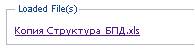

Простой поиск
Поле Simple Search Terms позволяет осуществлять простой поиск документов по единственному параметру, обычно слову из названия файла, из его метаданных или содержания. При таком типе поиска пользователь получает широкую выборку документов.
В поле нужно ввести поисковое слово или словосочетание, например: добыча или нефтяная скважина, и нажать клавишу Enter или кнопку Search в правом нижнем углу интерфейса.
Приложение осуществит поиск всех документов, зарегистрированных в хранилище и содержащих введенный параметр, и выведет их список в дополнительном окне Found Documents (Найденные документы). Окно содержит четыре колонки с русским (Title Rus) и английским (Title Eng) названием документа, его номером (Number) и гиперссылкой, позволяющей получить к нему доступ (Download).

Пользователь может либо 1). просмотреть/отредактировать метаданные документа, либо 2). загрузить документ на локальный компьютер без просмотра метаданных.
1). Для перехода в режим просмотра/редактирования метаданных из окна Found Documents нужно навести курсор на строку с нужным документом (подсветить её) и дважды нажать левой кнопкой мыши. Будет открыт новый интерфейс Edit Document, в котором представлена карточка метаданных выбранного документа. Если произведено редактирование метаданных, то необходимо снова сохранить карточку, нажав кнопку Save в правом нижнем углу интерфейса.
Кнопка Delete удалит карточку метаданных и сам файл из хранилища.
В режиме редактирования метаданных документа существует возможность загрузки самого документа на локальный компьютер. Для этого надо воспользоваться полем Loaded File(s) интерфейса Edit Document и нажать кнопкой мыши на гиперссылку с названием файла.

В появившемся диалоговом окне можно выбрать опции просмотра или сохранения файла.
Если после редактирования документа на локальном компьютере пользователь хочет занести его изменённый вариант в хранилище АСХД вместо старого варианта, то он должен загрузить его под тем же именем в тот же каталог. Приложение произведёт замену старого документа, выдав об этом предупреждение пользователю. Если пользователь хочет занести в хранилище отредактированный документ наряду со старым, то он должен зарегистрировать его как новый документ с новыми метаданными.
2. Для загрузки документа на локальный компьютер из окна Found Documents без просмотра метаданных нужно нажать на его гиперссылку (колонка Download). Пользователю будет предложено диалоговое окно, в котором он должен отметить галочкой нужную ему опцию: просмотр документа или его сохранение. Для просмотра Приложение загрузит выбранный документ в новом окне.
Пользователь может загружать несколько документов из списка найденных документов, а также из списка другого сеанса поиска. Все эти документы будут перечислены в окне Загрузки.